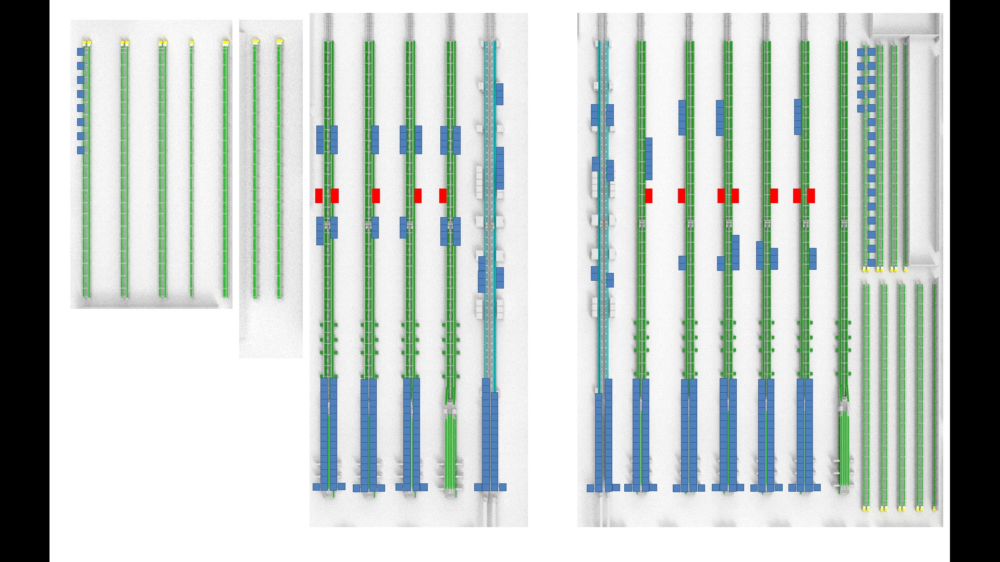

<!DOCTYPE html>
<html>

<head>
	<meta charset="utf-8">
	<title>使用jquery读取json格式文件</title>

	<script type="application/javascript">
	</script>
	<script src="https://cdn.staticfile.org/jquery/1.10.2/jquery.min.js"></script>
	<script language="JavaScript">
		document.onmousemove = function (e) {
			var loc = "x:" + e.pageX + ",y:" + e.pageY
			document.getElementById("point-loc").innerHTML = loc;
		}
	</script>

	<style>
		#divframe {
			background-image: url('./1.png');
			background-repeat: no-repeat;
			background-size: cover;
		}
	</style>
</head>

<body>
	<div id="point-loc" style="position: fixed;color:red"></div>
	<!--  -->


	<div>
		<input type="button" value="获取style.json数据,layout布局" id="btn" />
		<input type="button" value="获取info.json数据,设置颜色和状态" id="btn2" />
	</div>
	<div id="divframe">

	</div>
</body>
<script type="application/javascript">
	//监听按钮点击事件
	$("#btn").click(function () {
		$.ajax({
			url: "http://127.0.0.1/style.json",//同文件夹下的json文件路径
			type: "GET",//请求方式为get
			dataType: "json", //返回数据格式为json
			success: function (data) {//请求成功完成后要执行的方法 
				console.log(data);
				for (var i = 0; i < data.length; i++) {
					var obj = document.createElement("div");
					obj.setAttribute('id', data[i].name)
					obj.style.backgroundColor = data[i].color; //配置初始颜色
					//obj.innerText=data[i].name+":"+data[i].status;
					obj.innerText = data[i].title;
					obj.style.fontSize = "3px";
					obj.style.position = data[i].position;
					obj.style.left = data[i].left;
					obj.style.top = data[i].top;
					obj.style.width = data[i].width;
					obj.style.height = data[i].height;
					obj.style.borderStyle = "solid";
					obj.style.borderWidth = "1px";
					obj.title = data[i].name;
					obj.addEventListener("click", function (e) {
						//alert(this.getAttribute("id"));
						var xhttp = new XMLHttpRequest();
						xhttp.onreadystatechange = function () {
							if (this.readyState == 4 && this.status == 200) {
								document.getElementById("machine_content").innerHTML =
									this.responseText;
							}
						};
						xhttp.open("GET", "/machine/" + this.getAttribute("id") + ".html", true);
						xhttp.send();
					});
					document.body.appendChild(obj);
					console.log(data[i].name);
				}
			}
		})
		this.disabled = true;
	})

	$("#btn2").click(function () {
		$.ajax({
			url: "http://127.0.0.1/info.json",//同文件夹下的json文件路径
			type: "GET",//请求方式为get
			dataType: "json", //返回数据格式为json
			success: function (data) {//请求成功完成后要执行的方法 
				console.log(data);
				for (var i = 0; i < data.length; i++) {
					var obj = document.getElementById(data[i].name)
					obj.style.backgroundColor = data[i].color;	//根据最新状态配置颜色
				}
			}
		})
		this.disabled = true;
	})
</script>

</html>